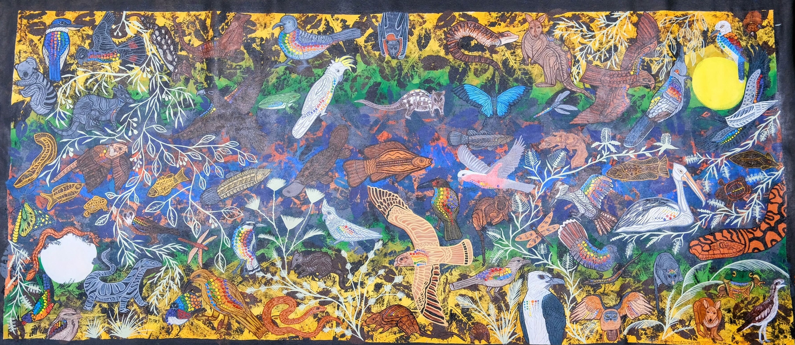
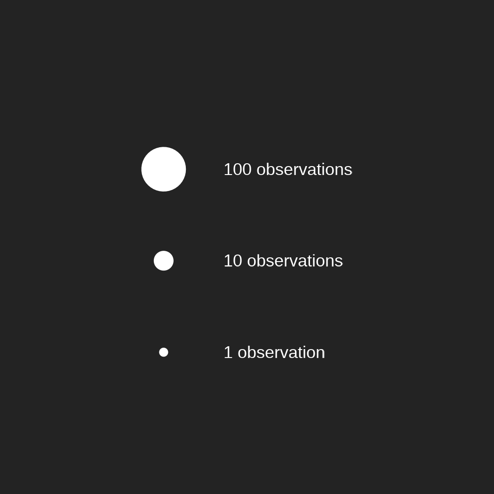
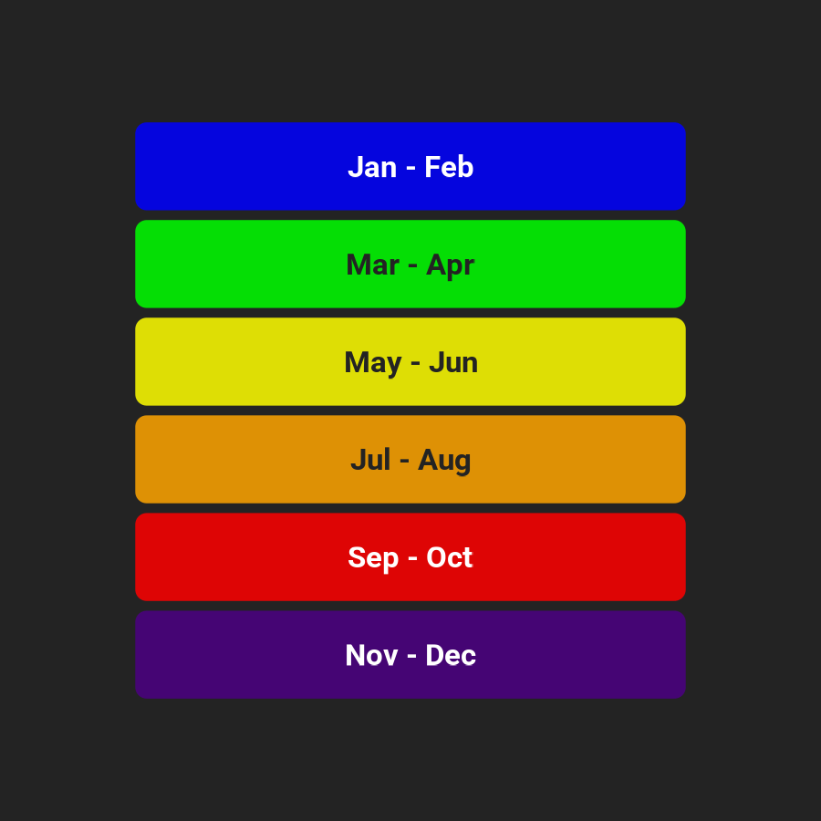
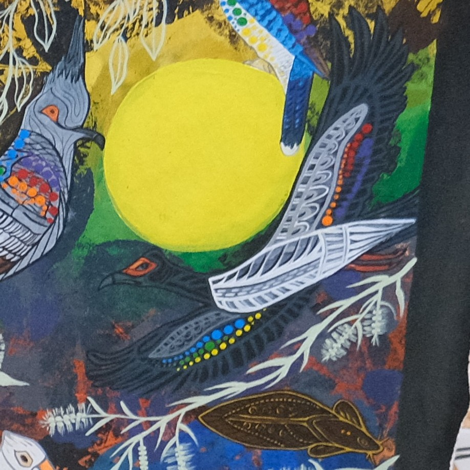

Aboriginal and Torres Straight Islander People preserve knowledge in art and story that captures aspects of the world undocumented or recorded in any other place. They carry glimpses of the past, a view of our present, and even predictions for the future.
How do these stories overlap with data? Do the records stored in Western infrastructures like the Atlas of Living Australia reflect or contrast traditional knowledge of a given ecosystem? In this artwork, produced by Ann-Marie Keating and Gullara McInnes, proud Koko-Muluridji women of the Wallara Clan, traditional art meets Western data for a unique look at Australian biodiversity.

Here in Mareeba, lush tropical rainforest meets the beginning of the outback to create a rich ecosystem.

Let’s explore the painting and some overarching themes as a guide to some of the cultural knowledge and inspirations in this work, with quotes from Ann-Marie Keeting.
On each animal, the number, colour and size of dots summarises its real observational data on the Atlas of Living Australia (within Mareeba).
Dot size corresponds to numbers of observations

Dot colour corresponds to the time of year observations were recorded.

You’ll notice that some animals have many dots while some have very few.
In Mareeba, the three most recorded birds in this painting are the Peaceful Dove (Geopelia placida), the Eastern Bar-shouldered Dove (Geopelia humeralis), and the Yellow Honeyeater (Stomiopera flava).

Dany Sloan CC-BY-NC 4.0 (Int)

Russell Cumming CC-BY-NC 4.0 (Int)

Anaëlle FRANCIA CC-BY-NC 4.0 (Int)
Birds hold great significance to Keating and her family.
There’s a lot of birds in here because I belong to birds…If I can’t paint a bird nicely I’m disgracing myself!
Birds like the Magpie Goose hold particular significance to Keating’s child Kimkahgulli.
My youngest child, her name is Kimkahgulli [which] means the single call of a magpie goose. So you can see the magpie goose sits in an area of prominence.


Ben CC-BY-NC-ND 4.0 (Int)
Many animals depicted in the painting also hold great cultural significance to the Muluridji people, like the Carpet Python, the Tawny Frogmouth and the Bush Stone Curlew.
[more photos?]
Hear more about this painting and the Muluridji people’s cultural connection to these animals from Ann-Marie Keating:
By combining Western data with Indigenous culture, Keating and McInnes have provided a unique look at the diversity of Muluridji Country. They have also highlighted the disparity that exists between local knowledge and observational data. Despite its usefulness, Western data alone cannot always paint a complete picture of an area. The long history that Indigenous people live on Country is essential for conservation. The hope is that the Muluridji people continue to preserve and share their cultural knowledge, providing a more complete picture of Mareeba’s ecosystem.